Product range
Womenswear developed to your design, or adapted from ours.
A selection of garments produced on our floor. Every piece here started as a tech pack or a reference sample — we develop to brand specification rather than sell a fixed catalogue.
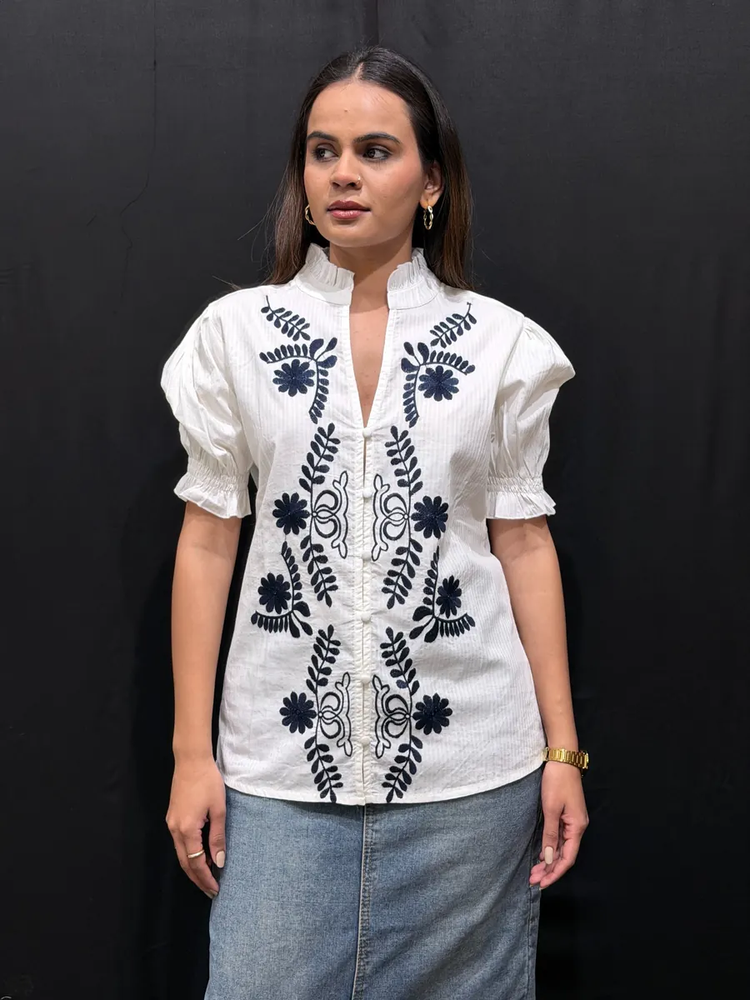
Cotton voile · placement embroidery
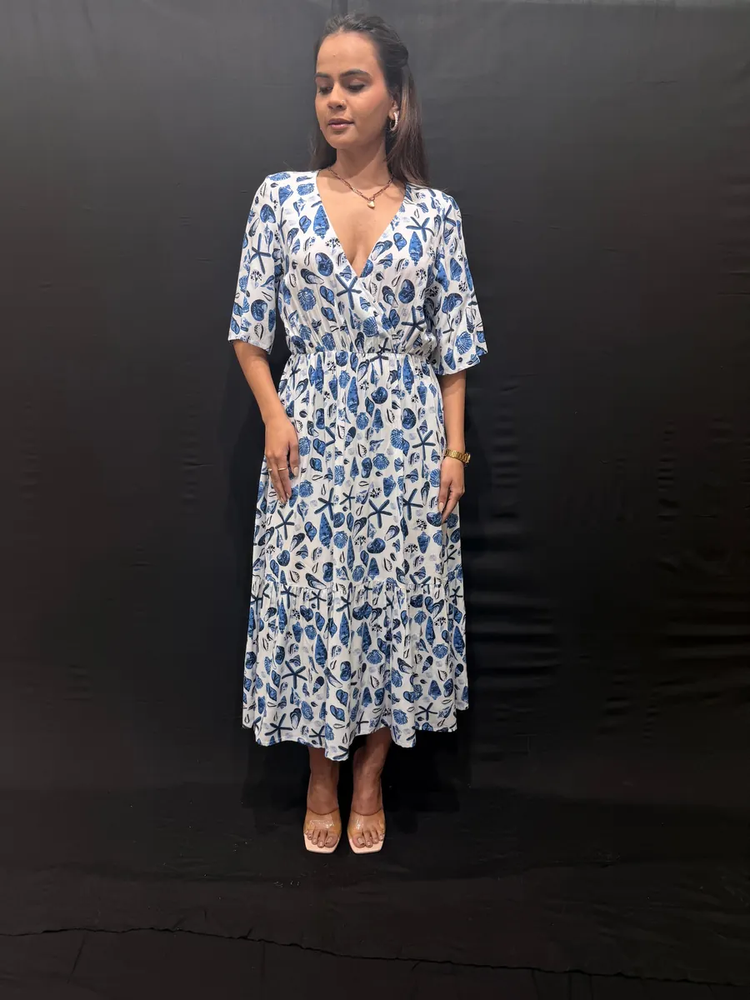
Rayon · all-over print
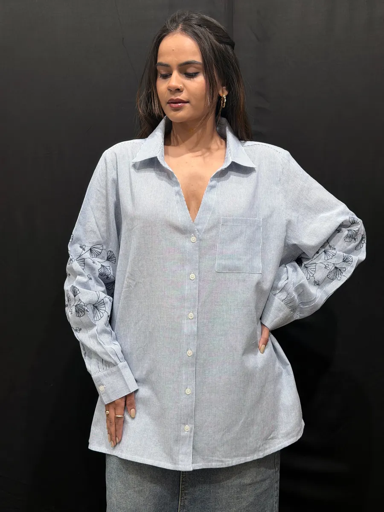
Yarn-dyed cotton · drop shoulder
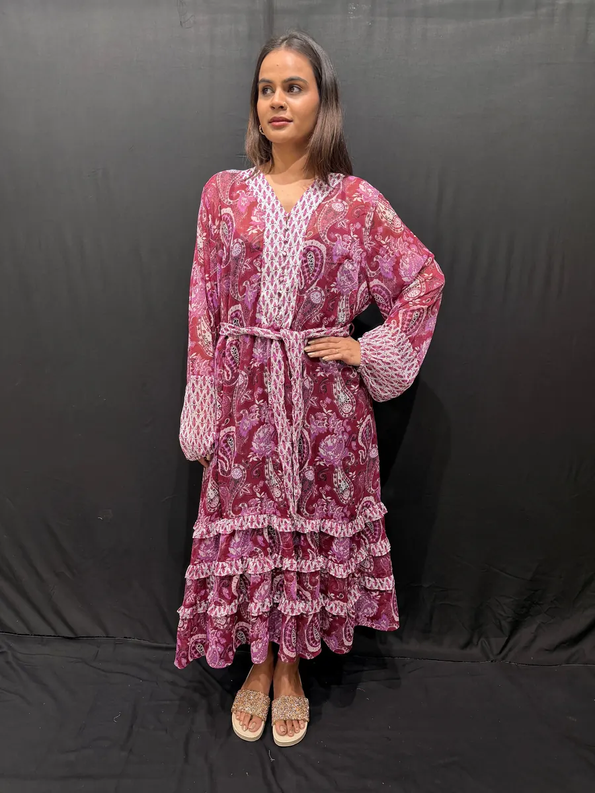
Viscose georgette · multi-panel
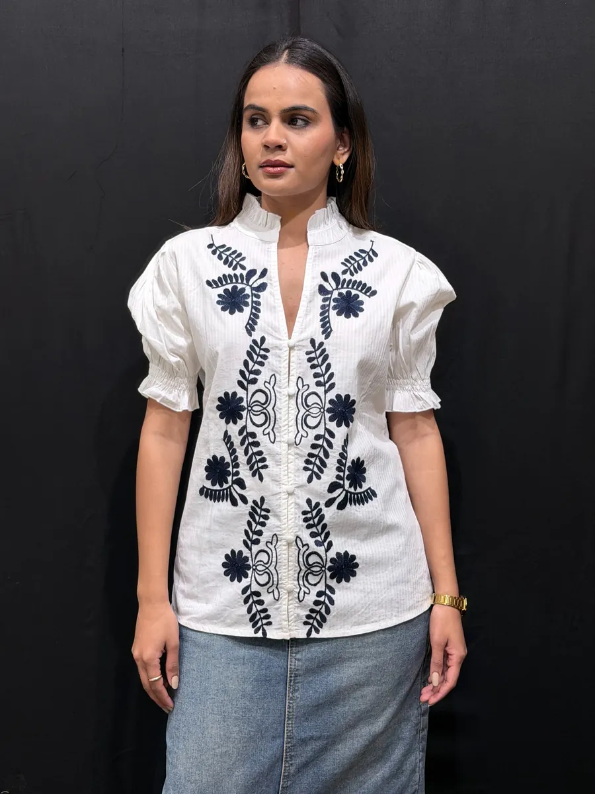
Cotton · contrast thread work
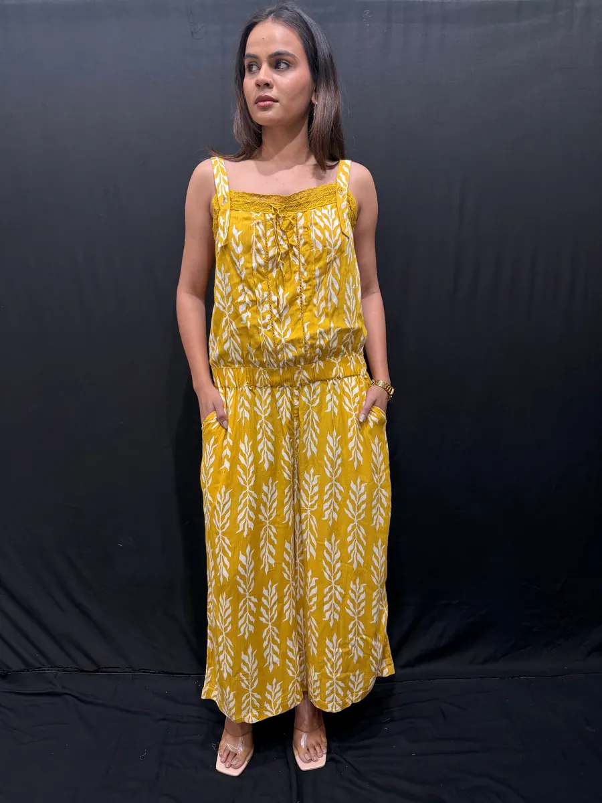
Rayon · strappy silhouette
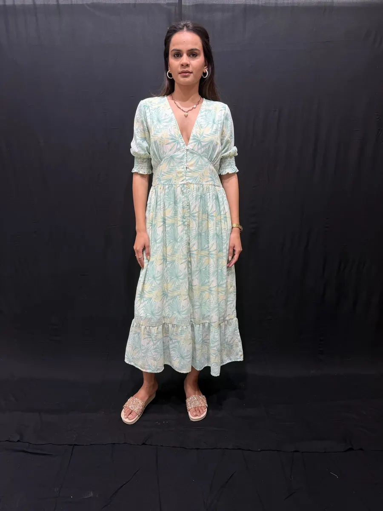
Cotton dobby · gathered tiers
Cotton · centre-front detail
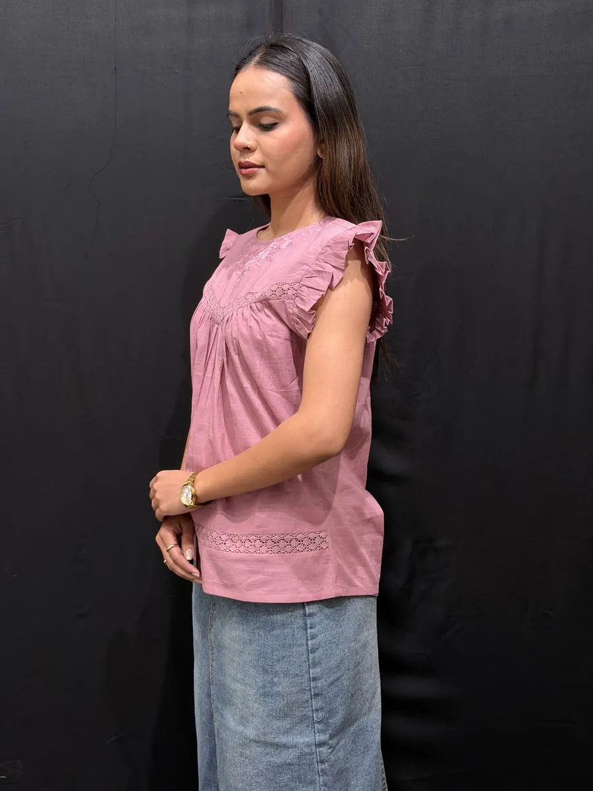
Cotton slub · pintuck yoke
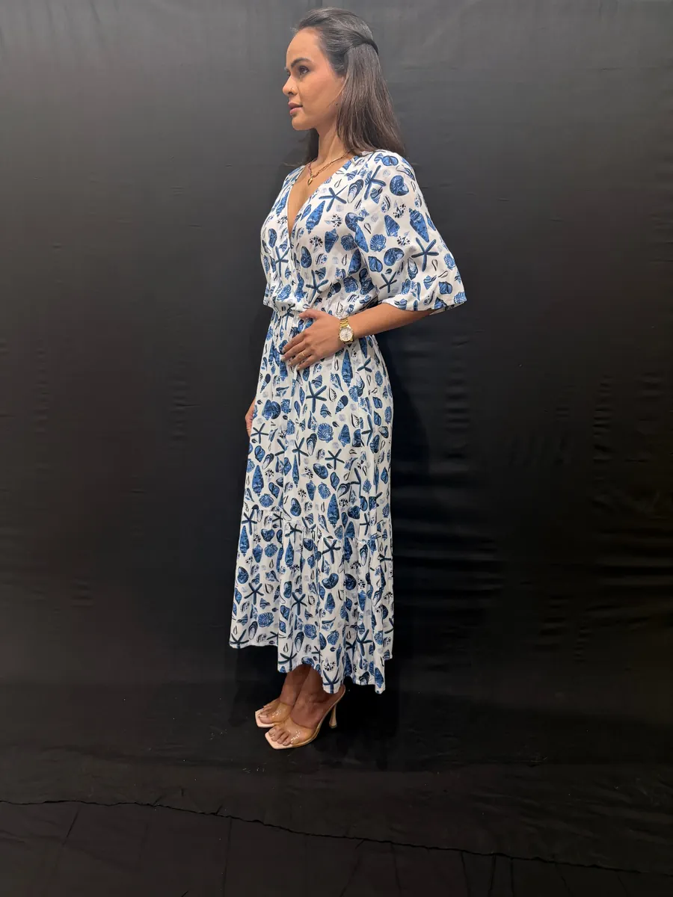
Cotton · hand-feel print
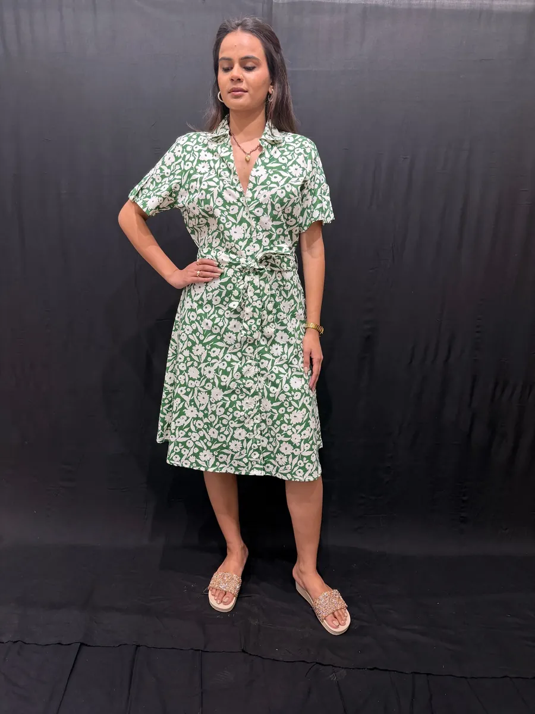
Viscose · wrap front
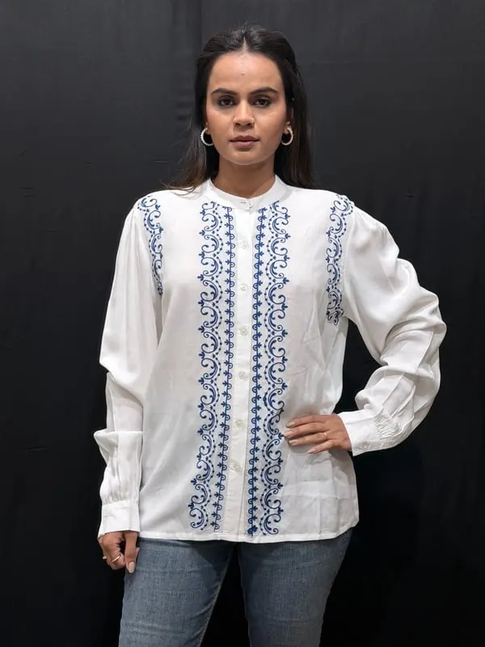
Cotton · tonal stripe
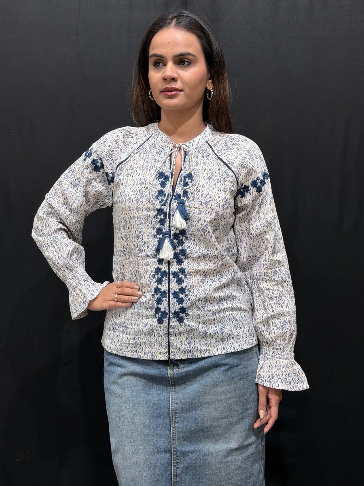
Cotton lawn · pintuck panels
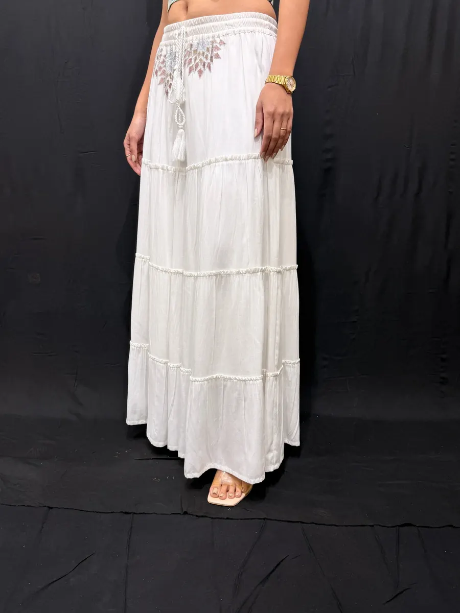
Rayon · tiered volume
Development
How a new style starts.
Send a tech pack, a sketch, or a garment you want re-engineered. We will confirm fabric, trims and embroidery approach, quote it, and agree a sampling date with you before we start.
Start a programme
Send us a tech pack. We will come back with a costing and a sampling plan.
Tell us your category, quantities and delivery window, and we will come back with a costing, a sampling plan, and an honest view of whether we are the right factory for it.